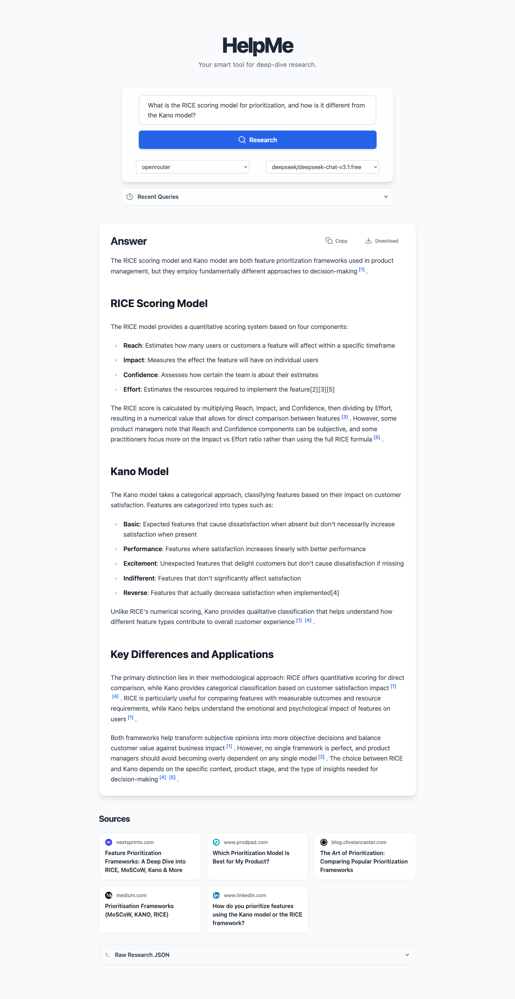

This document outlines the technical architecture and strategy for building HelpMe, an autonomous agent system designed to answer complex user queries by researching, synthesizing, and citing information from online sources.
Objective: To build a system that can take a query, such as "What is the RICE scoring model for prioritization, and how is it different from the Kano model?", and produce a single, reliable, and well-cited answer.
The system is built on a decoupled client-server model to ensure a clean separation of concerns, scalability, and maintainability.
The system follows a structured, multi-step process to handle a user's query, mimicking the workflow of a human research assistant.
graph TD
A[Frontend UI] -- 1. User submits query --> B[Backend API];
B -- 2. Request forwarded --> C[Orchestrator];
C -- 3. Refine Query for Search --> D[LLM Agent: Query Rewriter];
D -- 4. Optimized search terms --> E[Search Tool];
E -- 5. Fetches source URLs --> F[Researcher Agent];
F -- 6. Extracts content from sources --> G[Content Fetcher];
G -- 7. Structured research data (JSON) --> C;
C -- 8. Pass data to Synthesizer --> H[Synthesizer Agent];
H -- 9. Generate final answer using LLM --> I[LLM Service];
I -- 10. Formatted & cited answer --> B;
B -- 11. Sends final answer to UI --> A;
The core of the backend is a multi-agent system where each agent has a specialized role. This modular design makes the logic easy to follow, debug, and extend.
Orchestrator: The central controller that manages the entire workflow, passing the query and data between the other agents and tools.
Researcher Agent: This agent's primary responsibility is to find and process reliable information.
query_rewriter_system.txt) to transform the user's natural language question into a set of concise, keyword-driven search queries. This is a critical step for improving the relevance of search results.newspaper3k library to intelligently extract the core article content, filtering out ads and boilerplate. To avoid being blocked, the fetcher identifies itself with a standard browser User-Agent header. All sources are fetched concurrently to minimize latency.Synthesizer Agent: This agent's role is to transform the structured JSON data from the Researcher into a high-quality, human-readable answer.
synthesizer_system.txt) that instructs the LLM to act as a professional research analyst.[1], [2]).The technology stack was chosen to prioritize performance, user experience, and maintainability.
Backend (FastAPI & Python): FastAPI was chosen for its high performance, asynchronous capabilities, and automatic API documentation. Python's extensive ecosystem of data processing and AI libraries makes it the ideal choice for the backend logic.
Frontend (React & Vite): React allows for the creation of a dynamic and component-based UI. Vite provides a fast and efficient development experience. The application logic is separated into custom React Hooks (useQueryHistory, useResearch) to keep the UI components clean and maintainable.
LLM Agnostic Design: The system is designed to be flexible in its use of LLMs.
Note: These instructions are also available in the main README.md file.

pipnpmpip install -r requirements.txt.frontend directory and run npm install..env file from .env.example and add your API keys for Gemini and/or OpenRouter.uvicorn backend.main:app --reloadcd frontend && npm run devThe application will be available at http://localhost:5173.